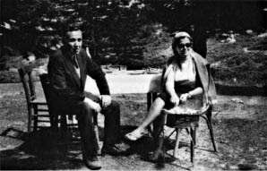

Ayşe, Huriye, Selma (yaş sırasına göre, küçükten büyüğe)!
Benden size izin
Keyfinize bakın! – Saat 19:00’a doğru eve gelebildim. Ev çok iyi idi, dinlenmiş, kendine gelmişti. Yalnız kutuda ekmek, dolapta kaşar peyniri küflenmişti, üç paket Sana yağı erimişti. (Sana yağı erir mi, erimişti.) Gerçekten sıcak, alnımdan terler akmaya başladı. İki gündür hiç su akmıyormuş. Banyodaki, kovadaki sular duruyordu, yedek sular duruyordu. Hanımeli kurumamıştı, vestiyer önündeki çiçekler ise biraz biraz kurumuşlardı. Abbas[72] muntazam suladığı halde herhalde havasızlıktan. Salondaki bütün çiçeklerin sıhhati yerindedir.
Benden size izin,
Keyfinize bakın!
Eylül sonuna kadar
Ören’de kalın! – Para göndereceğim, bin, iki bin, üç bin... ne kadar isterseniz. Gıdanızdan kısmayın!
Otobüste bitişik sıradaki kadın, yol boyunca hep armut yedi, çökelekleri kemirilmiş fare ölüleri gibi yere attı, ikide bir çiğnedi, vıcık vıcık yerde sanki karınları deşilmiş küçük fare ölüleri.–
Edremit’ten bir öğrencim bindi, Çapa’dan, şair. Edremit Lisesi’nde İngilizce öğretmeniymiş. Yanımda Selma kadar bir kız oturuyordu, tek başına Burhaniye’den Hereke’ye gidiyormuş, sonradan ahbap olduk. Bursa’da öğlen yemeği molası verilince –kız başka yerlerde hiç inmemişti otobüsten– onu da yemeğe davet ettim. Bir döner yedi, biraz ayran içti. Daha ye, daha! dedim, yemedi, sonra parasını vermeye kalktı. Liseyi bitirince Eczacılık Fakültesi’ne gidecekmiş, eczacı olunca gelir, senden bedava ilâç alırım ödeşiriz dedim, ismimi söyledim, beş sene sonra falan ilâcı yolla bana dedim, kabul etti.
Sıcak, sıcak... Yanıp tutuşan yollarda böylece geldim İstanbul’a. Araba vapuru Sirkeci’ye yanaşınca çıktım otobüsten, Dikilitaş otobüsüne bindim, ter ter... Komiser Emin bey[73] beni uğurladı Burhaniye’den. Bir kutu yolluk da verdi, evde açtım, içinde on tane o bizim üzümlü, küçük keklerden. – Her gün bir tanesini yiyerek on gün daha Burhaniye’de gibi olacağım.
Şimdi, sabah saat 7:00, cumartesi. Termometre 30 derece. Saat 5:00’te kalktım, su yine yok.
Gelelim yine hikâyemize: Abbas’ı buldum gelince. Beş şişe Fruko, yarım kilo ekmek, bir paket tereyağı aldırdım. Anahtarları geri aldım, 50 Lirayı veriyordu, 35 Lirası ağustos kapıcı parası, 15 Lirası da harçlığın olsun! dedim, herkes sizin gibi olsa! dedi, içini çekti. Erimiş Sana yağları gibi ezikti içi.–
Tecrübe başarıyla sonuçlanmıştır. Biz olmayınca eve bir şey olmuyor. İnsanlara oluyor mu? İşte onu bilemem, onu hiç bilemem. Sonra karanlık bastı, tabiî ışık yaktım ve usulca çıktım balkona. Hiç ışık yanar da o kadar yakından fark edilmez mi, Ayşe’nin balkonda seke sek oynadığı farkedilir de uzun boyluca birisinin balkonda olduğu farkedilmez mi? Önce fark edilmedi, sonra birkaç karaltı belirdi pencere önünde, anladım ki anladılar. Sessizce eğilip içeri geçtim, saksıları çömelerek taşıdım balkona[74].. Yakınlıklarda tek başımıza kalmak mümkün mü hiç? Eve hiçbir şey olmamış, musluklar akmamış, camlar kırılmamış. Ev iyi. Bıraktığımız insanlar da iyi mi? İşte onu bilemem, henüz bilemem.
Evde biraz daha kaldıktan sonra Beyoğlu’na çıktım. Bir şiş, bir salata yedim, üç bardak bira içtim. Ter ter... Gömleğimden dışarı vurdu ter. Döndüm, postaneden kitapları, dergileri aldım. Dolmuştu kutu. Bir kilo şeftali, bir kilo armut aldım. On buçukta evde idim. Kapıda bir kâğıt: Yoktunuz. Selâmlar. Karabulut’lar[75].–
İşte böyle, küçükten büyüğe, yaş sırasına göre: Selma, Huriye, Ayşe! Artık havama girip çalışmaya başlamalı. Benim denizim bu. Size böyle uzun mektup yazamazsam kusura bakmayın, ama kısalarını yazarım tabiî. Evi gördük, insanları da göreceğiz tabiî. Armut, şeftali aldık, et, yoğurt da alacağız tabiî.
Midem düzeldi, yollarda su, şerbet, gece bira, gece yarısı Fruko içtim, ama bugün iyiyim.
Saat şimdi 8:30. Hava puslu, bir iki yağmur sepeledi, hava serinleyecek galiba. Abbas geldi, yarım ekmek daha aldırdım.
Şimdi çıkıp et falan alarak döneceğim. Dibek sokağına da uğrarım belki ya da gece giderim.
Bu mektubumu pazartesi alırsınız, pazartesi yine yazarım. Siz de yazın. Benden size izin –Keyfinize bakın. Deniz, kum, güneş, gıda– Hasta olmayın sakın!
Hepinizi öperim. Tanıdıklara selâm.
B. Necatigil

Bursa Uludağ, Sarıalan’da et-mangal (14 Eylül 1968).